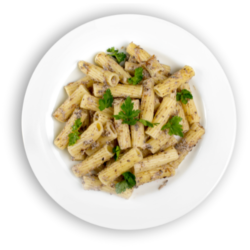

Beranda
Tentang Kami
Resep
Tips
Penne Cheese Pasta

Bahan dan Alat:
Penne Pasta
Sosis
2 bawang putih
1/4 bawang bombai
225 gram susu full cream
80 gram keju parut
kuning telur
Tepung serbaguna
Minyak secukupnya
Cara Membuat:
Rebus penne pasta sampai matang
Tumis bawang putih, bawang bombai sampai harum. Lalu, masukkan sosis.
Masukkan susu full cream, keju parut, kuning telur, dan tepung yang sudah diaduk, tunggu hingga mendidih.
Masukkan penne pasta, lalu aduk hingga merata.
Penne pasta siap disajikan.